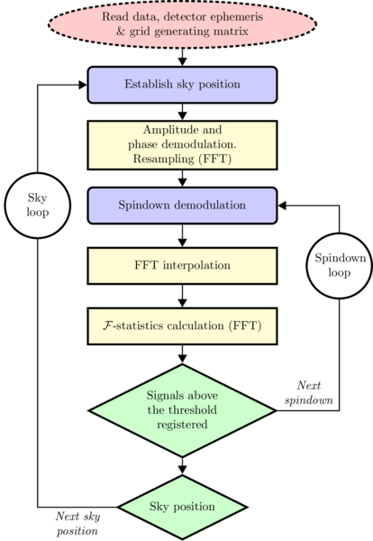

F-statistic candidate signal search
This is the main code of the pipeline that performs the search for continuous gravitational-wave signals in the data from a network of detectors using the \mathcal{F}-statistic method. The search is performed over a grid of parameters covering the sky position, spindown and frequency values. Candidate signals (triggers) above a given threshold for the \mathcal{F}-statistic are stored in the output HDF5 files.
Since this is very time consuming part of the TDFstat all-sky search, the code is optimized for performance: vectorized and parallelized using OpenMP.
Algorithm flowchart

Prerequisites
The code is written in C and compiled with gnu17 dialect of GNU C compiler (support for complex numbers).
Required libraries: GNU Scientific Library (GSL), FFTW library, HDF5 library, iniparser (included in the repository).
Opional libraries: SLEEF vector library (included in the repository).
Compilation
Run make in search/network/openmp. The standard Makfile is configured to produce executable named gwsearch-cascadelake-avx2-float. Comments in the Makefile help to modify certain compilation options.
Configuration file
The search code requires a configuration file in INI format. The repository contains example file search-template.ini with comments explaining each option.
[search]
indir = /work/chuck/virgo/O3/allsky_o3_c01 # input data directory (string)
outdir = . # output directory (string)
band = 72 # band number (int)
seg = 13 # segment number (int)
hemi = 2 # hemisphere [1,2 or 0 for both] (int)
thr = 14.5 # fstatistic threshold of candidates (double)
nod = 6 # length of input time series [days] (int)
dt = 2 # input time series sampling interval [seconds] (double)
overlap = 0.0625 # bands overlap, band frequency fpo=10+(1-overlap)*B/(2*dt) (double)
narrowdown = -1 # limits band in f to band_center +/- [0-0.5], auto calculated if < 0 (double)
fstat_norm = # fstatistic normalization (NULL=white noise or blocks_avg)
grid_file = 013/grids/grid_013_0072_H1L1c.bin
# optional
usedet = # use only specified detectors
addsig = # name of the file with signals to be injected
mods = read_O3 # coma separated list of modifiers: read_O3
# flags
veto_flag = 0 # veto lines: 0-no, 1-yes
checkp_flag = 0 # write checkpoint file on every triggers buffer flush
options / concepts
indir, input data
Input data must be prepared in a way outlined in the genseg documentation. Requied files are: xdat (time series), DetSSB (ephemeris), grid (grid generator matrix). Optional files: lines (veto lines), addsig (software injections), range file (search ranges). Please note that same of the parameters have to match those used during input data generation (e.g., dt, overlap, nod).
Bands, segments, overlap
Short summary from the genseg documentation: we analyze narrow-band (0.25-1 Hz) time segments of length being an integer multiple of 1 sidereal day (typically 2-24 days). Subsequent time segments are labeled by natural numbers. In some contexts (like filenames) those numbers are formatted using pattern DDD (e.g. 009).
Bands are overlapping in frequency to avoid edge effects. Bands are also labeled by natural numbers and in some contexts the 4 digit format is used (e.g., 0027). The general formula for the initial frequency of the band number b is:
fpo(b) = 10 + (1 - overlap) \cdot b \frac{1}{2 \cdot dt}
where bandwidth B=1/(2dt) and overlap is expressed as a fraction of B. The overlap shuld have the form of 2^{-n}, to assure that fpo is aligned with fourier bins in the SFDB database (e.g. 0.0625).
narrowdown
Narrowdown is used to limit the range of frequencies for which the F-statistic is computed. It should be in range [0-0.5] and we define the whole band range to be [-0.5, 0.5]. Narrowdown 0.5 means "use the whole bandwidth". Narrowdown 0.45 means that the band is narrowed by 5% on both sides. If narrowdown < 0, then the frequency range is calculated from overlap in such a way that the overapping part of the band is split in the middle, effectivlly creating two sibling, non-overlapping bands.
|<------- band1 ----|--->|
|<---|---- band 2 ------->|
This is needed to avoid analyzing the same range of frequencies more than once when performing all-sky search over many bands.
veto lines
Veto lines are used to exclude instrumental lines from the search. The main source of lines are official line files used by the CW group. CSV versions of those files should be placed in the direcory <indir>/lines/. All files matching the glob pattern <det>lines*.csv (e.g. H1lines-v2.csv) will be used. These files are used to generate band veto files which contain only lines relevant for the current band, both in units of \pi used in our pipeline and in Hz. The band veto files are always located in the same directory as trigger files (ourdir) and named vlines_<band>.dat.
There is a separate code vlinegen to generate the band veto file from the general ones. It takes as inut the same .ini file as the search code: vlinegen search.ini. If the band veto file is missing, it will be generated by the search code exactly the same way as vlinegen would do it. However search will never overwrite this file - to make a new version always use vlinegen. In addition to band veto lines, the vlines_<band>.dat file also contains a band_veto_fraction value which is needed by the FAP code (as a comment). The search.ini file can set relevant flag: veto_flag. It will apply the veto lines to the search output if set to 1 (usually we apply them in the coincidences step).
addsig / software injections
Running
Minimal call to gwsearch-cascadelake-avx2-float is as follows (code compiled with the GNUSINCOS option):
% ./gwsearch-cascadelake-avx2-float search.ini
Network of detectors
Test data frames nnn=001-008 with pure Gaussian noise 2-day time segments with sampling time equal to 2s (xdatc_nnn_1234.bin) for two LIGO detectors H1 and L1 are available here.
The program will proceed assuming that
- the data directory for frame
001is located at../../../testdata/2d_0.25/001and contain subdirectories with input data for H1, L1 and/or V1 detectors (all available detectors are used by default; to select specific detectors, use-usedetoption), - the grid of parameters files is expected to be in
../../../testdata/2d_0.25/001, bandequals to 1234,- the sampling time
dtequals 2 s, - number of days
nodin 2, - the
-addsigoption is used to add a software injection to pure noise Gaussian data. The signal's parameters are randomly generated using thesigencode (for more details see the minimal example). - the threshold for the \mathcal{F}-statistic is set to be 14.5,
-outputis the current directory,--nocheckpointdisables the checkpointing (writing the last visited position on the grid to thestatefile),
Output files
HDF5 structure:
HDF5 object | data type
----------------------------------------------------
/ | root group
├── attr: format_version | int
├── attr: git_commit | string
├── attr: opts | compound (struct Command_line_opts)
├── attr: sett | compound (struct Search_settings)
├── attr: s_range | compound (struct Search_ranges)
├── attr: ifo | compound[] (struct Detector_settings)
├── attr: detectors | string
├── attr: t_start | string
├── attr: t_end | string
├── attr: totsgnl | int
├── attr: walltime | double
├── attr: num_threads | int
├── dataset "triggers" | dataset
│ ├── data | compound[] (Trigger[])
│ ├── m | float
│ ├── n | float
│ ├── s | float
│ ├── ra | float
│ ├── dec | float
│ ├── fdot | float
│ ├── ffstat | float[]
├── dataset "triggers_inj_1" | dataset
│ ├── data | compound[] (Trigger[])
└── ...
Example content of HDF file with triggers
h5dump triggers_006_0017_1.h5
Click to expand
HDF5 "triggers_006_0017_1.h5" {
GROUP "/" {
ATTRIBUTE "format_version" {
DATATYPE H5T_STD_I32LE
DATASPACE SIMPLE { ( 1 ) / ( 1 ) }
DATA {
(0): 2
}
}
ATTRIBUTE "git_commit" {
DATATYPE H5T_STRING {
STRSIZE 41;
STRPAD H5T_STR_NULLTERM;
CSET H5T_CSET_ASCII;
CTYPE H5T_C_S1;
}
DATASPACE SCALAR
DATA {
(0): "af29493e4e582a9bf2489f53e2df30d9e3108f7f"
}
}
ATTRIBUTE "ifo" {
DATATYPE H5T_COMPOUND {
H5T_STRING {
STRSIZE 2;
STRPAD H5T_STR_NULLTERM;
CSET H5T_CSET_ASCII;
CTYPE H5T_C_S1;
} "name";
H5T_STRING {
STRSIZE 2048;
STRPAD H5T_STR_NULLTERM;
CSET H5T_CSET_ASCII;
CTYPE H5T_C_S1;
} "xdatname";
H5T_IEEE_F64LE "start_time";
}
DATASPACE SIMPLE { ( 2 ) / ( 2 ) }
DATA {
(0): {
"H1",
"/work/chuck/virgo/O4/input_data_O4_G02/xdat_O4_6d/006/H1/xdat_006_0017.bin",
1.37156e+09
},
(1): {
"L1",
"/work/chuck/virgo/O4/input_data_O4_G02/xdat_O4_6d/006/L1/xdat_006_0017.bin",
1.37156e+09
}
}
}
ATTRIBUTE "opts" {
DATATYPE H5T_COMPOUND {
H5T_STD_I32LE "checkp_flag";
H5T_STD_I32LE "veto_flag";
H5T_STD_I32LE "seg";
H5T_STD_I32LE "band";
H5T_STD_I32LE "hemi";
H5T_IEEE_F64LE "thr";
H5T_IEEE_F64LE "narrowdown";
H5T_IEEE_F64LE "overlap";
H5T_STRING {
STRSIZE H5T_VARIABLE;
STRPAD H5T_STR_NULLTERM;
CSET H5T_CSET_ASCII;
CTYPE H5T_C_S1;
} "indir";
H5T_STRING {
STRSIZE H5T_VARIABLE;
STRPAD H5T_STR_NULLTERM;
CSET H5T_CSET_ASCII;
CTYPE H5T_C_S1;
} "outdir";
H5T_STRING {
STRSIZE H5T_VARIABLE;
STRPAD H5T_STR_NULLTERM;
CSET H5T_CSET_ASCII;
CTYPE H5T_C_S1;
} "grid_file";
H5T_STRING {
STRSIZE H5T_VARIABLE;
STRPAD H5T_STR_NULLTERM;
CSET H5T_CSET_ASCII;
CTYPE H5T_C_S1;
} "usedet";
H5T_STRING {
STRSIZE H5T_VARIABLE;
STRPAD H5T_STR_NULLTERM;
CSET H5T_CSET_ASCII;
CTYPE H5T_C_S1;
} "addsig";
H5T_STRING {
STRSIZE H5T_VARIABLE;
STRPAD H5T_STR_NULLTERM;
CSET H5T_CSET_ASCII;
CTYPE H5T_C_S1;
} "fstat_norm";
H5T_STRING {
STRSIZE H5T_VARIABLE;
STRPAD H5T_STR_NULLTERM;
CSET H5T_CSET_ASCII;
CTYPE H5T_C_S1;
} "mods";
H5T_STRING {
STRSIZE H5T_VARIABLE;
STRPAD H5T_STR_NULLTERM;
CSET H5T_CSET_ASCII;
CTYPE H5T_C_S1;
} "gtype";
H5T_STRING {
STRSIZE H5T_VARIABLE;
STRPAD H5T_STR_NULLTERM;
CSET H5T_CSET_ASCII;
CTYPE H5T_C_S1;
} "gcenter";
H5T_STRING {
STRSIZE H5T_VARIABLE;
STRPAD H5T_STR_NULLTERM;
CSET H5T_CSET_ASCII;
CTYPE H5T_C_S1;
} "gsizes";
H5T_STRING {
STRSIZE H5T_VARIABLE;
STRPAD H5T_STR_NULLTERM;
CSET H5T_CSET_ASCII;
CTYPE H5T_C_S1;
} "gsteps";
}
DATASPACE SCALAR
DATA {
(0): {
0,
0,
6,
17,
0,
14.5,
1.47262,
0.0625,
"/work/chuck/virgo/O4/input_data_O4_G02/xdat_O4_6d",
".",
"020/grids/grid_020_0017_H1L1.bin",
"",
"",
"",
"",
"allsky",
"26.321649 -8.50e-11 3.86687548714555 0.74835013347064",
"16256 0. 0. 0.",
"1 1. 1. 1."
}
}
}
ATTRIBUTE "s_range" {
DATATYPE H5T_COMPOUND {
H5T_ARRAY { [2] H5T_STD_I32LE } "pmr";
H5T_ARRAY { [2] H5T_STD_I32LE } "fr";
H5T_ARRAY { [2] H5T_IEEE_F32LE } "mr";
H5T_ARRAY { [2] H5T_IEEE_F32LE } "nr";
H5T_ARRAY { [2] H5T_IEEE_F32LE } "spndr";
H5T_IEEE_F32LE "mstep";
H5T_IEEE_F32LE "nstep";
H5T_IEEE_F32LE "sstep";
H5T_IEEE_F32LE "mst";
H5T_IEEE_F32LE "nst";
H5T_IEEE_F32LE "sst";
H5T_STD_I32LE "pst";
}
DATASPACE SCALAR
DATA {
(0): {
[ 1, 2 ],
[ 4096, 520192 ],
[ -10, 10 ],
[ -5, 5 ],
[ -153, 63 ],
1,
1,
1,
-10,
-5,
-153,
1
}
}
}
ATTRIBUTE "sett" {
DATATYPE H5T_COMPOUND {
H5T_IEEE_F64LE "fpo";
H5T_IEEE_F64LE "dt";
H5T_IEEE_F64LE "B";
H5T_IEEE_F64LE "oms";
H5T_IEEE_F64LE "omr";
H5T_IEEE_F64LE "Smin";
H5T_IEEE_F64LE "Smax";
H5T_IEEE_F64LE "sepsm";
H5T_IEEE_F64LE "cepsm";
H5T_STD_I32LE "nfft";
H5T_STD_I32LE "nod";
H5T_STD_I32LE "N";
H5T_STD_I32LE "nfftf";
H5T_STD_I32LE "nmax";
H5T_STD_I32LE "nmin";
H5T_STD_I32LE "s";
H5T_STD_I32LE "nd";
H5T_STD_I32LE "interpftpad";
H5T_STD_I32LE "fftpad";
H5T_STD_I32LE "Ninterp";
H5T_STD_I32LE "nifo";
H5T_STD_I32LE "numlines_band";
H5T_STD_I32LE "nvlines_all_inband";
H5T_STD_I32LE "bufsize";
H5T_STD_I32LE "dd";
H5T_ARRAY { [16] H5T_IEEE_F64LE } "M";
}
DATASPACE SCALAR
DATA {
(0): {
25.9375,
0.5,
1,
81.4851,
3.64606e-05,
0,
6.70414e-10,
0.397777,
0.917482,
1048576,
6,
1033969,
1048576,
520192,
4096,
1,
2,
2,
1,
2097152,
2,
2,
9,
65536,
5,
[ 5.99211e-06, 1.16998e-26, -2.346e-17, 2.39069e-15, -7.00372e-06, 7.45542e-12, 0, 0, 0.0026634, 1.47568e-11, -27.1918, 0, 0.000487897, -4.3489e-11, -3.79525, -9.09952 ]
}
}
}
ATTRIBUTE "t_start" {
DATATYPE H5T_STRING {
STRSIZE 20;
STRPAD H5T_STR_NULLTERM;
CSET H5T_CSET_ASCII;
CTYPE H5T_C_S1;
}
DATASPACE SCALAR
DATA {
(0): "2026-07-31 13:41:45"
}
}
DATASET "triggers" {
DATATYPE H5T_COMPOUND {
H5T_IEEE_F32LE "m";
H5T_IEEE_F32LE "n";
H5T_IEEE_F32LE "s";
H5T_IEEE_F32LE "ra";
H5T_IEEE_F32LE "dec";
H5T_IEEE_F32LE "fdot";
H5T_VLEN { H5T_IEEE_F32LE} "ffstat";
}
DATASPACE SIMPLE { ( 818 ) / ( H5S_UNLIMITED ) }
DATA {
(0): {
-8,
0,
-136,
0.264512,
0.388286,
-8.4801e-10,
(0.154192, 16.0539, 0.56044, 14.6618, 0.21382, 15.7866, 0.769385, 15.5331)
},
(1): {
-8,
0,
-135,
0.264512,
0.388286,
-8.38517e-10,
(0.812311, 15.5455, 0.44696, 14.9664, 0.613565, 15.4472, 0.310226, 15.3944, 0.315984, 15.7549)
},
.... < more triggers > ...
}